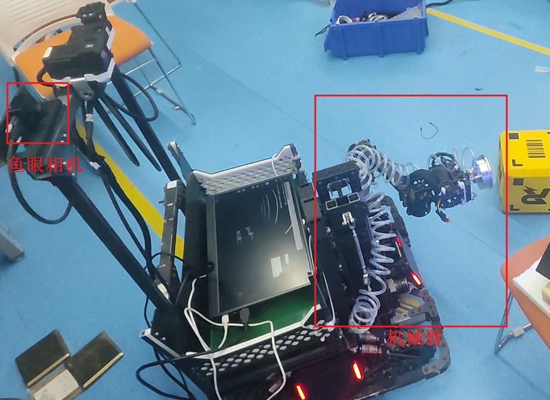
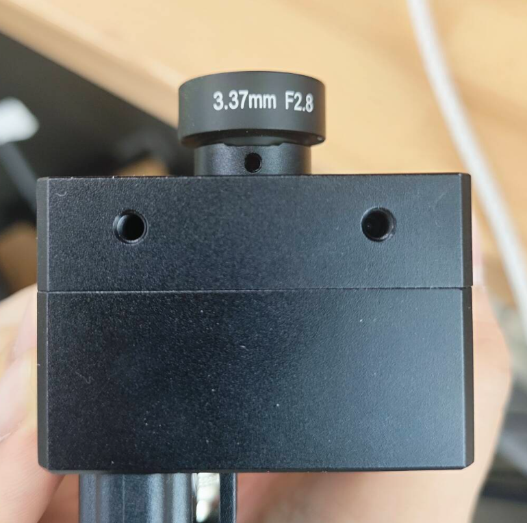
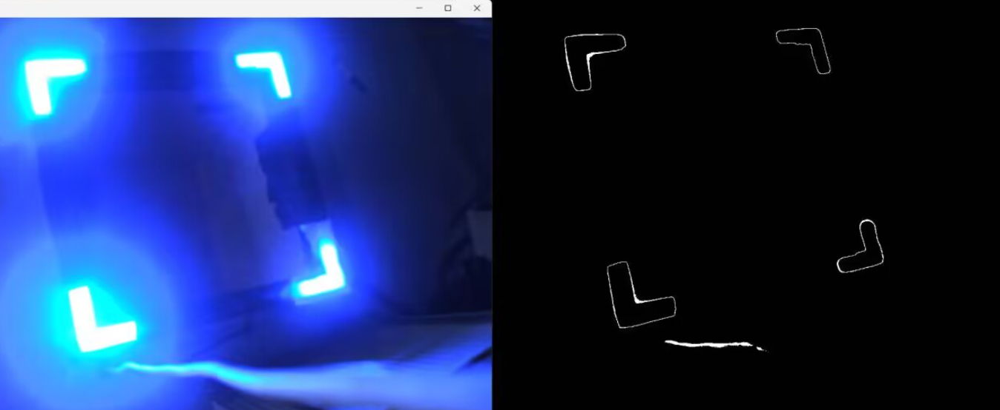
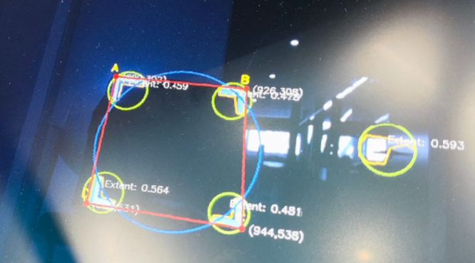
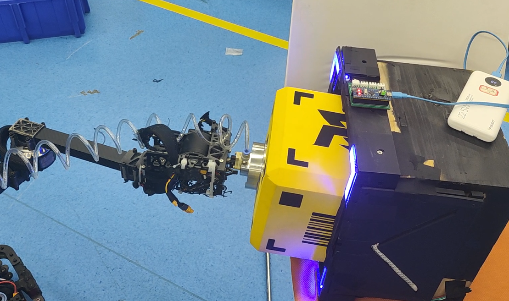
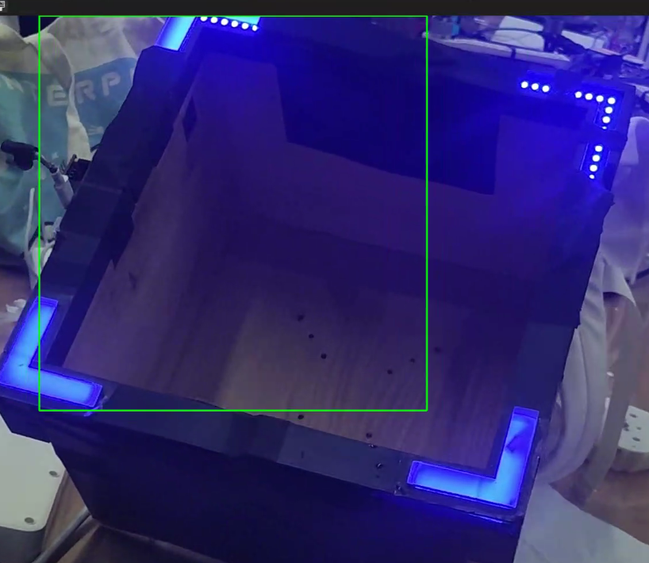
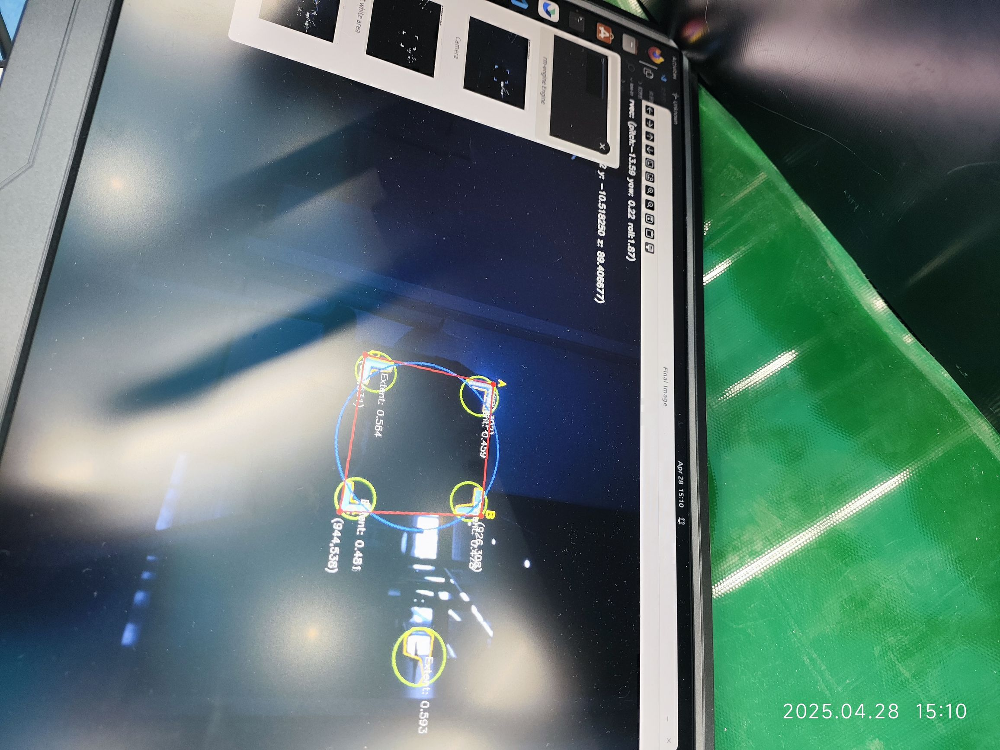

| 项目角色 | 第一负责人 · 视觉算法与引擎架构开发 |
| 技术栈 | C++17, OpenCV 4.11, OpenGL, Dear ImGui, PyBind11, Eigen |
| 硬件平台 | Intel NUC i5-1135G7（无独立GPU，纯CPU边缘计算） |
| 竞赛成果 | RoboMaster 2025全国赛三等奖、区域赛二等奖 |
| 学术成果 | 第一作者IEEE会议论文 LightViServo（在投） |
RoboMaster机甲大师赛要求工程机器人在高速对抗环境下实现自主"取矿–兑换"操作。核心挑战在于：机械臂末端需精准对准兑换站上的4个L形蓝色LED标记（30×30cm正方形四角），完成6-DoF位姿估计后驱动4连杆机械臂执行抓取，整个闭环延迟须低于20ms才能满足实时性要求。
本项目自研了一套跨平台C++17视觉伺服引擎框架（rm-engine），在不依赖GPU加速的Intel NUC边缘设备上，实现了从鱼眼图像采集、传统视觉检测、6-DoF PnP位姿估计、解析逆运动学求解、笛卡尔轨迹插值到CRC16串口闭环反馈的全链路自动操控，端到端延迟仅13.5ms（~74 FPS）。

| 组件 | 型号/规格 | 说明 |
|---|---|---|
| 计算单元 | Intel NUC i5-1135G7, 16GB RAM | 无独立GPU，纯CPU计算 |
| 工业相机 | 迈德威视 + 3.37mm F2.8鱼眼镜头 | Eye-in-hand构型 |
| 分辨率/帧率 | 1280×1024, 最高120FPS | 实际处理74FPS |
| 机械臂 | 4连杆构型 (l1 = l2 = 28cm) | 2-DoF平面臂 + 升降 + 3-DoF腕部 |
| 控制器 | STM32F407 | USB-UART 9600 baud |
| 目标标记 | 4个L形蓝色LED | 30×30cm正方形四角 |

rm-engine是本项目的核心软件产出，设计为一个分层模块化、跨平台的C++17引擎框架，借鉴游戏引擎架构思想，将视觉伺服系统组织为可复用的模块化组件：
#pragma once // === Core === #include "core/core.h" #include "core/application.h" // 应用生命周期管理 #include "core/log.h" // spdlog日志系统 #include "core/layer.h" // 图层栈(Layer Stack) #include "core/timestep.h" // 帧间时间步 // === Events & Input === #include "events/event.h" // 事件系统 #include "events/application-event.h" #include "events/key-event.h" #include "core/input.h" // 平台无关输入 #include "core/key-codes.h" // === Renderer === #include "renderer/renderer.h" // OpenGL渲染器 #include "renderer/render-command.h" #include "renderer/buffer.h" #include "renderer/shader.h" #include "renderer/texture.h" #include "renderer/vertex-array.h" #include "renderer/orthographic-camera.h" #include "renderer/frame-buffer.h" // 帧缓冲(FBO) // === ImGui === #include "imgui/imgui-layer.h" // Dear ImGui调参界面
引擎源码组织为以下分层架构，所有代码位于Mechax命名空间：
| 层级 | 模块 | 职责与技术 |
|---|---|---|
| 基础层 | core/ | Application生命周期、Layer图层栈、多线程管理、Timer性能分析、spdlog日志（5级：TRACE/DEBUG/INFO/WARN/ERROR） |
| 事件层 | events/ | 事件分发系统（键盘/鼠标/窗口事件），平台无关输入抽象 |
| 渲染层 | renderer/ | OpenGL渲染管线：Shader/Buffer/Texture/VAO/FBO，2D渲染器，正交相机 |
| 模块层 | modules/ | 相机采集（MindVision/Intel RealSense）、DH坐标系、串口通信、图像处理流水线 |
| 数学层 | RMECV/ | 自定义矩阵库（mat.h），轻量级替代Eigen用于关键路径 |
| 绑定层 | python/ | PyBind11 C++→Python绑定，支持Python脚本调用引擎API |
| 可视化 | imgui/ | Dear ImGui集成，实时HSV阈值调参、PnP结果可视化 |
| 平台层 | platform/ | Windows（win-window.h）、Linux（GLFW窗口系统）平台适配 |
构建系统采用Premake5（Lua脚本驱动），通过一套配置文件生成Windows（VS2022 .sln）和Linux（gmake2 Makefile）工程，实现跨平台一键编译：
workspace "RM Engine"
architecture "x64"
configurations { "debug", "release", "dist" }
-- 第三方依赖目录
includeDir["glfw"] = "robomaster-engine/vendor/glfw/include"
includeDir["glad"] = "robomaster-engine/vendor/glad/include"
includeDir["imgui"] = "robomaster-engine/vendor/imgui"
includeDir["glm"] = "robomaster-engine/vendor/glm"
includeDir["spdlog"] = "robomaster-engine/vendor/spdlog/include"
includeDir["serial"] = "robomaster-engine/vendor/serial"
includeDir["MV"] = "robomaster-engine/vendor/mindvision"
includeDir["realsense"] = "robomaster-engine/vendor/intel_realsense"
includeDir["pybind11"] = "robomaster-engine/vendor/pybind11"
Lua扩展脚本体系实现环境自适应：
lua/env.lua：自动检测Anaconda/系统Python环境，维护python.ini跨平台路径配置lua/python-need.lua：Python C++编译环境（Windows: python310.lib / Linux: python3.10.so）lua/opencv-need.lua：OpenCV 4.11.0（Windows: DLL自动拷贝 / Linux: SO + RPATH链接）lua/openvino-need.lua：Intel OpenVINO推理框架（ONNX、PyTorch前端、Linux OpenCL加速）# Windows (Anaconda + VS2022)
premake5 --python="D:\anaconda3\envs\rm" --is_conda=true vs2022
# Linux (Conda + gmake2)
premake5 --python="/home/user/miniconda3/envs/rm" \
--is_conda=true gmake2
# Docker部署
sudo docker exec -it <container_id> /bin/bash
引擎采用多线程流水线运行模型，每个功能模块继承自modules基类，可选择独立线程或主线程运行：
// 主线程控制 Application& app = Application::Get(); app.PushMultiThreadToCurrent(new VisualModule()); app.PushMultiThreadToCurrent(new IKSolverModule()); // 宏控制多线程启停 #define ENABLE_MULTITHREADING 1 #if ENABLE_MULTITHREADING pool.enqueue(module_visual); pool.enqueue(module_ik); #else module_visual(); module_ik(); #endif
性能分析采用Chrome Tracing格式，通过ROBOT\PROFILE\FUNCTION()和ROBOT\PROFILE\SCOPE("name")宏标注热点，输出JSON时序数据供chrome://tracing可视化分析。

端到端流水线分为以下阶段，每帧总延迟仅13.5ms：
采用HSV与灰度联合过滤隔离蓝色LED区域，有效抑制镜面反射与彩色背景干扰：
鱼眼相机内参与Brown-Conrady畸变系数（k1 = -0.339的强负值反映桶形畸变特征）：
通过四个几何准则筛选有效的L形轮廓：
// 双色彩空间分割
cv::cvtColor(frame, hsv, cv::COLOR_BGR2HSV);
cv::inRange(hsv, cv::Scalar(38,135,100),
cv::Scalar(179,255,255), mask_hsv);
cv::cvtColor(frame, gray, cv::COLOR_BGR2GRAY);
cv::threshold(gray, mask_gray, 100, 200, cv::THRESH_BINARY);
cv::bitwise_and(mask_hsv, mask_gray, mask);
// 边缘增强: 高斯模糊 -> Canny -> 膨胀
cv::GaussianBlur(mask, mask, cv::Size(7,7), 5);
cv::Canny(mask, edges, 50, 100);
cv::dilate(edges, edges,
cv::getStructuringElement(cv::MORPH_RECT, cv::Size(5,5)));
// 多准则轮廓过滤
for (const auto& c : contours) {
double area = cv::contourArea(c);
if (area < 200) continue; // 面积约束
auto rrect = cv::minAreaRect(c);
float ar = std::max(rrect.size.width, rrect.size.height)
/ std::min(rrect.size.width, rrect.size.height);
if (ar > 3.5f || ar < 0.4f) continue; // 长宽比
double extent = area/(rrect.size.width*rrect.size.height);
if (extent < 0.35 || extent > 0.75) continue; // 填充率
valid_contours.push_back(c);
}
对通过过滤的N个轮廓，枚举所有binomN4个四元组，选择全局包围圆面积最小的组合，从4个选中圆的边界提取最远点作为关键点：
4个关键点按极角αi = atan2(Δ y, Δ x)升序排列，标注为A、B、C、D，确保与3D模型点一一对应后送入PnP求解。

使用cv::solvePnP（ITERATIVE模式）在求解过程中内联处理Brown-Conrady畸变校正，恢复6-DoF位姿后，通过手眼标定外参偏移将相机坐标系转换到机械臂基座坐标系：
姿态角直接传递：apitch = rx，ayaw = -ry，aroll = rz。
4连杆机械臂（l1 = l2 = 28cm，l3 = 7cm，l4 = 12cm）的自由度分配为：大臂θ1（X方向）、小臂θ2（Y方向）、底座升降（Z轴）、腕部3-DoF（ψ, φ, ρ）。
Step 1：腕部中心解耦
Step 2：余弦定理求解——平面到达距离r = √xw2 + yw2，工作空间约束|l1 - l2| ≤ r ≤ l1 + l2：
Step 3：双分支消歧与正运动学验证——θ1和θ2的±组合产生最多4个候选解，通过关节限位（θ1 ∈ [π/2, π]，θ2 ∈ [-π, 2π]）和正运动学验证（末端误差< 0.5cm）筛选，最终调整偏航角ψfinal = ψ - θ1 - θ2。
Step 4：工作空间扩展——当r > 80cm时触发底盘前移补偿；若IK仍失败则复位至安全构型。
| 距离(cm) | 平均误差(cm) | 最大误差(cm) | 求解率 | 耗时(μs) |
|---|---|---|---|---|
| 20 | 0.02 | 0.08 | 100% | 1.2 |
| 40 | 0.05 | 0.18 | 100% | 1.3 |
| 60 | 0.12 | 0.41 | 98.5% | 1.4 |
| 80 | 0.31 | 0.49 | 94.2% | 1.5 |
| >80(含底盘) | 0.28 | 0.47 | 91.8% | 2.1 |
解出目标关节角后，在笛卡尔空间（而非关节空间）进行N=10步线性插值，保证末端轨迹平滑。逼近距离d = -40cm，每个航点均进行IK求解，仅当全部航点有效时才执行轨迹。

CRC16串口协议帧格式：
| 字节位置 | 字段 | 类型 | 说明 | |
|---|---|---|---|---|
| 0 | 帧头SOF | uint8 | 发送0xA5 / 接收0xB5 | |
| 1–8 | θ1, θ2 | 2×float | 关节1 | 2角度 |
| 9–12 | z\height | float | 升降高度（×1.25缩放） | |
| 13–24 | ψ, φ, ρ | 3×float | 腕部姿态角 | |
| 25–36 | fwd, bwd, cw | 3×float | 底盘运动指令 | |
| 37 | CRC16 | uint16 | 多项式0xA001校验 |
闭环反馈控制（最多100次迭代）：发送关节命令→读取反馈角度→检查收敛条件|θifb - θicmd| < 0.1 rad→收敛后前进至下一航点。
项目前期尝试了YOLOv11n-Pose关键点检测方案，在OpenVINO INT8量化后实际部署中遇到了三个核心问题，最终决策回退至传统视觉：

| 指标 | 传统视觉 | YOLOv11-Pose |
|---|---|---|
| 训练数据需求 | 无 | 大量标注数据 |
| 检测延迟 | 6.7ms | 12.8ms |
| 端到端延迟 | 13.5ms | ~22ms+ |
| 光照变化稳定性 | 高（几何先验） | 低（数据不足） |
| 关键点精度 | 亚像素级 | 偏差较大 |
| GPU依赖 | 无 | 需要（CPU低效） |
核心结论：在数据有限、场景结构化的RoboMaster赛场条件下，传统视觉方法是更稳健的工程选择。深度学习方案受限于训练数据多样性不足（竞赛场地光照、视角变化难以充分覆盖），模型泛化能力有限。
| 处理阶段 | 延迟(ms) | 占比 |
|---|---|---|
| 图像采集 | 2.1 | 19.6% |
| HSV+灰度分割 | 0.8 | 7.5% |
| 高斯+Canny+膨胀 | 1.2 | 11.2% |
| 轮廓提取+过滤 | 1.5 | 14.0% |
| MEC+关键点提取 | 1.8 | 16.8% |
| PnP位姿估计 | 1.4 | 13.1% |
| 坐标变换 | 0.2 | 1.9% |
| IK求解 | <0.01 | <0.1% |
| 轨迹规划 | 0.4 | 3.7% |
| 串口通信 | 1.2 | 11.2% |
| 合计 | ~10.7 | — |
| 实际(含ImGui) | ~13.5 | ~74 FPS |
| 指标 | 数值 | 占比 |
|---|---|---|
| 静态场景操控成功率 | >80% | — |
| 近距离检测失败 | — | 35% |
| 光照干扰失败 | — | 30% |
| 工作空间边界IK无解 | — | 20% |
| 通信/反馈超时 | — | 15% |
